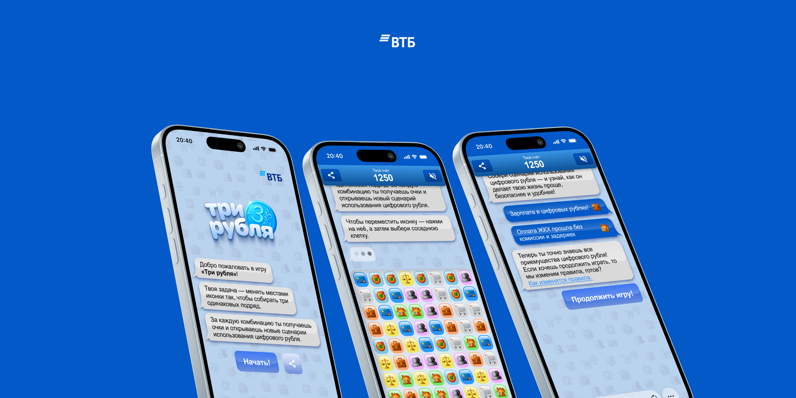

Задача заключалась в разработке геймифицированной промо-механики для ВТБ и Команды Т1 в условиях агрессивного 12-дневного спринта. Цель продукта — не просто развлечение, а нативное обучение пользователей сценариям использования цифрового рубля. Мы должны были превратить скучную финансовую информацию в интерактивный опыт, способный удерживать внимание аудитории 18–40 лет.
